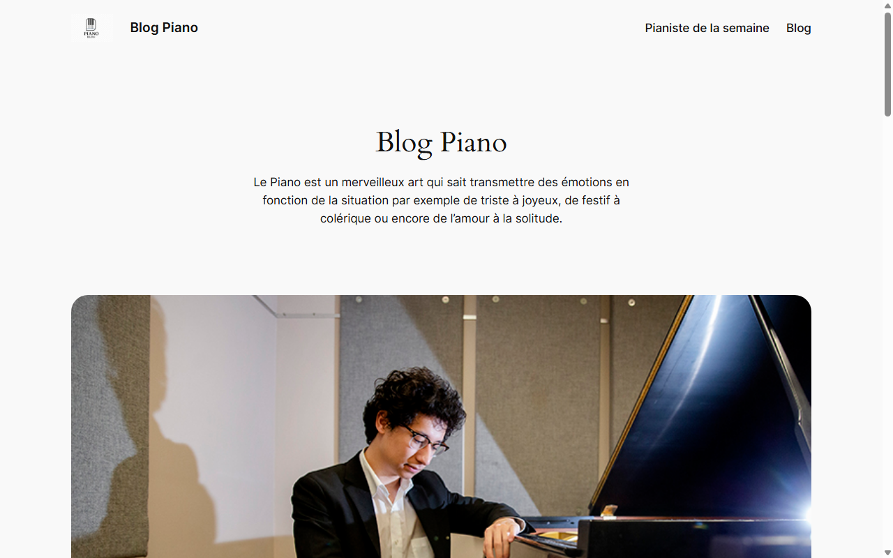

WordPress • Déploiement & Migration
🌐 DevOps, Architecture CMS & Intégration en Production
Description du Projet
Ce projet consiste en la création, le déploiement et la personnalisation complète d'un site internet dynamique utilisant le CMS WordPress, dédié à l'actualité musicale et aux pianistes de renom.
Phase 1 : Développement Local (Docker)
L'infrastructure locale a été entièrement orchestrée à l'aide de Docker et Docker Compose. Cette approche moderne a permis d'isoler le site WordPress et sa base de données MySQL dans des conteneurs distincts, garantissant un environnement de travail stable, reproductible et sécurisé.
Phase 2 : Déploiement en Ligne (Alwaysdata)
Le déploiement en ligne a été réalisé en transférant l'intégralité des fichiers WordPress par FTP sur le serveur d'hébergement Alwaysdata. La base de données a été exportée puis importée en ligne, et les configurations ont été adaptées pour assurer le bon fonctionnement du site et de tous ses liens sur le web.
Visiter le site en ligne (Alwaysdata)Le site en ligne est entièrement opérationnel, fluide et optimisé pour tous les écrans.